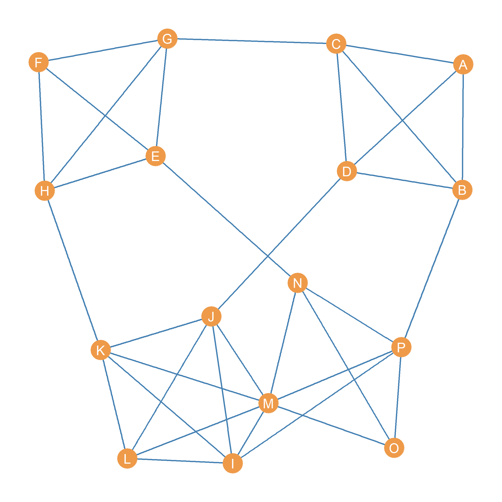
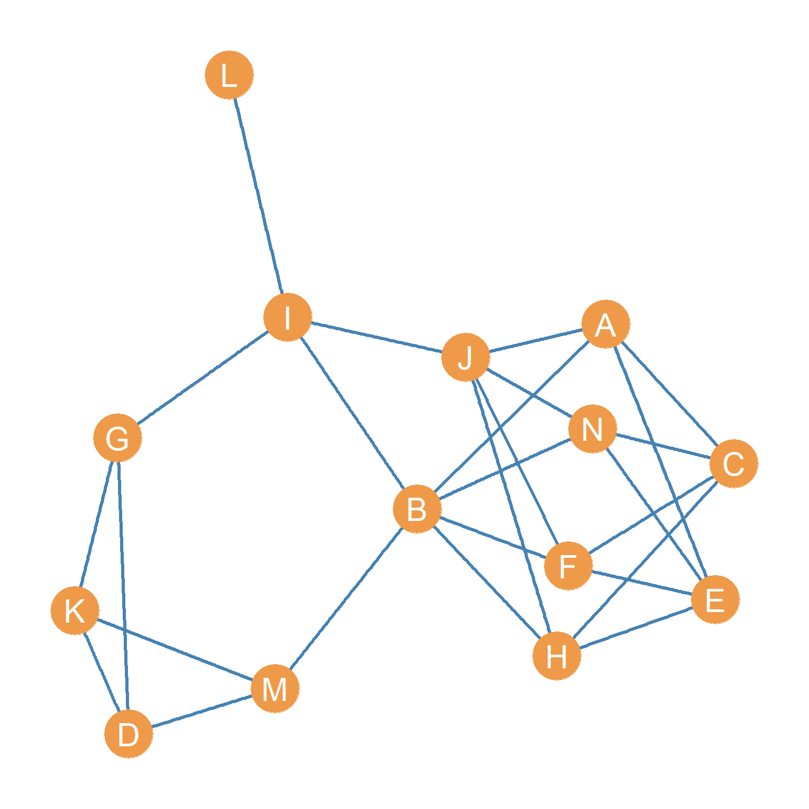

54 Homework VIII: Subgroups, Graph Connectivity, and Structural Similarity
54.1 Cliques and n-Cliques
List the nodes in all the cliques of size four in Figure 54.1.
List the nodes in all the cliques of size five in Figure 54.1.
How many cliques of size four does node M belong to?
List the nodes in one of the 2-cliques in Figure 54.1:
List the nodes in the five cliques of size four nested inside the clique of size five in Figure 54.1.
54.2 Structural Equivalence and Structural Similarity

- In the matrix below, write down the cell entries for the adjacency matrix corresponding to the graph shown in Figure 54.2:
| A | B | C | D | E | F | G | H | I | J | K | L | M | N | |
|---|---|---|---|---|---|---|---|---|---|---|---|---|---|---|
| A | ---- | |||||||||||||
| B | ---- | |||||||||||||
| C | ---- | |||||||||||||
| D | ---- | |||||||||||||
| E | ---- | |||||||||||||
| F | ---- | |||||||||||||
| G | ---- | |||||||||||||
| H | ---- | |||||||||||||
| I | ---- | |||||||||||||
| J | ---- | |||||||||||||
| K | ---- | |||||||||||||
| L | ---- | |||||||||||||
| M | ---- | |||||||||||||
| N | ---- |
- Using the information from the previous matrix, in the matrix below, write down the cell entries for the structural similarity matrix corresponding to the graph shown in Figure 54.2 using the Euclidean Distance:
| A | B | C | D | E | F | G | H | I | J | K | L | M | N | |
|---|---|---|---|---|---|---|---|---|---|---|---|---|---|---|
| A | ---- | |||||||||||||
| B | ---- | |||||||||||||
| C | ---- | |||||||||||||
| D | ---- | |||||||||||||
| E | ---- | |||||||||||||
| F | ---- | |||||||||||||
| G | ---- | |||||||||||||
| H | ---- | |||||||||||||
| I | ---- | |||||||||||||
| J | ---- | |||||||||||||
| K | ---- | |||||||||||||
| L | ---- | |||||||||||||
| M | ---- | |||||||||||||
| N | ---- |
Using the Information in the previous matrix, write down the set of nodes that are structurally equivalent (e.g., connected to the same set of neighbors) in the graph shown in Figure 54.2.
Out of the nodes that are not structurally equivalent, which pairs of nodes have the highest structural similarity in the graph shown in Figure 54.2?
Using the Jaccard Similarity metric, compute the structural similarity between nodes K and N in the graph shown in Figure 54.2.
Using the Dice Similarity metric, compute the structural similarity between nodes L and M in the graph shown in Figure 54.2.
Using the Cosine Similarity metric, compute the structural similarity between nodes D and B in the graph shown in Figure 54.2.
54.3 Graph Connectivity
Write down a node cut set for the graph shown in Figure 54.1.
Write down an edge cut set for the graph shown in Figure 54.1.
What is the k-connectivity of the graph in Figure 54.1?
What is the edge connectivity of the graph in Figure 54.1?
What is the pairwise k-connectivity between nodes J and O in Figure 54.1?